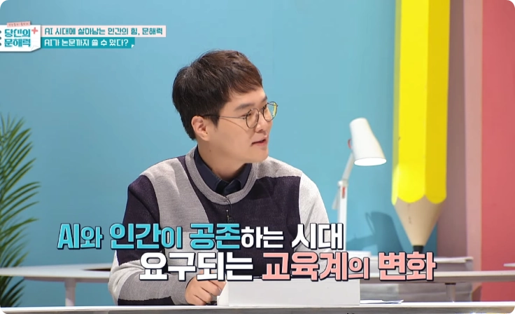
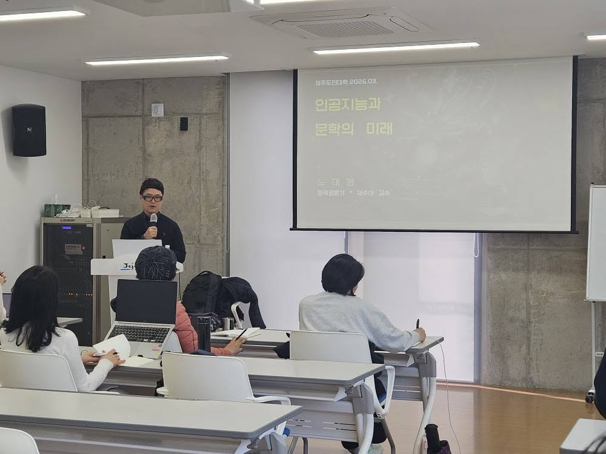
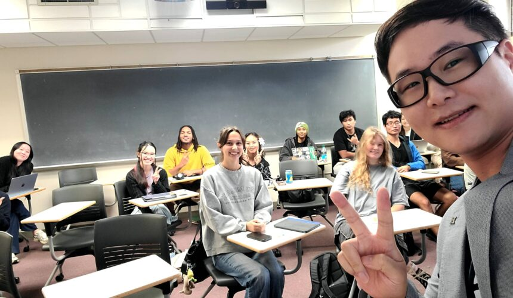
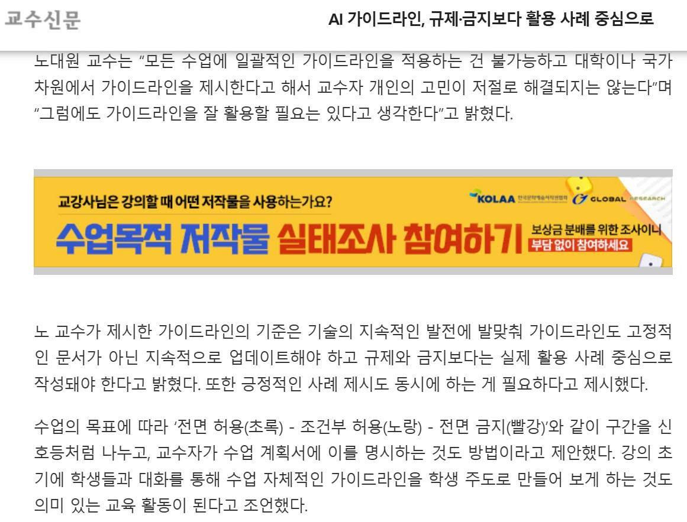

Speaking & Media
강연·언론
Broadcast
방송 출연
2024.11.
EBS 다큐멘터리 <SW 미래채움 교육> - 생성형 AI 활용 수업 촬영, 인터뷰
2023.10.09.
제주 KBS1 라디오 <제주포커스> - 문해력의 의미와 중요성
2023.10.04.
제주 KBS1 <집중진단 제주> - AI 시대 바람직한 문해 교육의 방향은?
2022.10.06.
2020.07.03.
제주 KBS1 <콘테나> - '슬기로운 코로나19 시대' ('코로나19 뒤바뀌는 일상') [유튜브]
2020.05.01.
제주 KBS1 <콘테나> - '리더는 왜 필요한가?' ('제주에 필요한 리더') [유튜브]
2020.02.14.
제주 KBS1 <콘테나> - '코로나19 팩트 체크' ('코로나19로 돌아본 제주의 전염병') [유튜브]

Public Talks
대중 강연
2026.03.10~31.
제주문학관 인공지능과 함께 쓰는 문학 (4회)
2024.12.03.
제주도교육청 생성형 인공지능과 함께하는 교육혁신
2024.09.05~26.
제주문학관 인공지능과 문학의 미래 (4회)
2024.08.29.
아트선재센터 김초엽의 <지구 끝의 온실>과 SF의 사변적 시공간 ([ASJC 리딩리스트] 《서도호: 스페큘레이션스》 읽기 모임)
2024.05.08.
대구 범어도서관 인공지능은 인간을 지배할까? - 인공지능 시대의 문학과 인문학
2024.04~05.
제주더큰내일센터 문해력 교육 (3회)
2022.11.09.
문학주간 2022 <인공지능 시대의 문해력>
2022.10.08.
김수영문학관 인공지능 시대 문학예술 산책 ‘인공지능과 SF 문학’
2022.06.18.~07.16.
제주시 한라도서관 과학기술과 인문예술의 융합적 만남 (5회)
2021.09.23.~10.28.
서귀포시 우당도서관 문학평론가와 함께하는 서평교실
2021.09.10.~10.01.
제주시 한라도서관 SF로 미래를 만나다 (4회)
2019.10.
제주시 한라도서관 제주 인문 독서아카데미 ‘호모 파티엔스의 인간학’

University Talks
대학 강연
2026.01.28.
University of Hawai‘i at West Oahu — The World of Korean Science Fiction Literature
2026.01.27.
University of Hawai‘i at Mānoa — The World of Korean Science Fiction Literature
2025.11.15.
제주관광대 — 생성형 AI의 대학교 교육 및 업무 활용
2025.11.10.
한양대 대형교양강의 ‘기계비평’ — AI와 문학의 미래
2024.12.06.
숙명여대 한국어문화연구소 — 생성형 AI를 활용한 연구와 교육 방법
2024.11.22.
강원대 인문과학연구소 — 생성형 AI를 활용한 연구와 교육 방법
2024.11.14.
전남대 대학원(BK21) — “생성형 AI를 활용한 연구와 교육 방법”, <AI 에듀테크 창의융합클래스>
2024.09.
한국교양기초교육원 — 생성 AI와 교육의 미래 (전국 교강사 대상 온라인 강좌)
2024.05.30.
연세대 통합디자인학과 — SF와 사변적 상상력
2024.02.14.
제주관광대 — ChatGPT 활용 방안
2023.11.16.
가천대학교 — 생성 AI의 연구 및 교육 활용 방안
2023.10.20.
성균관대(한국생태문화연구회) 10월 정기 모임 — 기후 위기와 AI를 함께 상상하기
2023.09.01.
서울대 기초교육원 — 생성형 인공지능 시대 글쓰기 교양교육의 쟁점과 방향
2023.08.21.
을지대 교양학부 — AI 활용 교육 방법: ChatGPT와 대학 교양 교육
2023.05.30.
연세대 대학원(미래캠, BK21) — 서사 연구의 새로운 방향
2022.08.01.
제주대 — 인공지능강사 교육, <인공지능 시대의 사회와 문화>
2020.11.27.
서강대 대학원 — 포스트휴먼과 한국 문학 연구
2020.05.08.
전남대 대학원(BK21) — 인지 서사학의 이론과 실제
2018.09.19.
연세대 대학원(신촌캠) — 몸의 인지 서사학

Media
언론 기고·인터뷰
이미정, 장고은, “[출판계 파고든 AI③] 흔들린 독자 신뢰 “출판 윤리 재정립 필요””, <시사위크>, 2026.05.28.
김지원, "책 수백만권 스캔한 앤스로픽 충격…AI가 뒤흔든 ‘저작권’", <경향신문>, 2026.02.21.
김재호, "AI가 책을 덥석 삼켰다... ‘공정 이용’ 논란", <교수신문>, 2026.02.09.
조해람, “🤖"휴먼, 소설은 제가 씁니다”, <경향신문＞, 2026.02.03.
고희진, "문학에 스며드는 AI···공모전 당선을 취소합니다? ", <경향신문＞, 2025.12.30.
임효진, "AI 가이드라인, 규제·금지보다 활용 사례 중심으로: AI 활용 교육, 무엇부터 개선해야 할까", <교수신문>, 2025.11.28.
임효진, "AI 커닝, 대학은 제대로 교육하고 있나: 교수들이 말하는 'AI 커닝' 이슈", <교수신문>, 2025.11.24.
김재호, "사상 최대 R&D 예산…“기초연구 장기투자 중요”, ", <교수신문>, 2025.09.01.
노대원, "AI가 소설을 쓸 때, 우리는? … 문학이 포스트휴먼 시대의 지성에…", <대학신문>, 2025.06.29.
노대원, "AI와 인간 너머의 포스트휴먼 시대...문학의 새로운 스펙트럼을 탐험하다", <교수신문>, 2025.06.19.
장동석, “새로운 영역 만든 AI 작가… 어떻게 공존할 것인가 [북리뷰]”, <문화일보>, 2025.05.16.
노대원, "인공지능은 고독에서 벗어나게 할까…그 고독이란 또 무엇일까", <교수신문>, 2025.04.02.
한형진, “제주대 노대원 교수, 미국 풀브라이트 재단 방문 학자 선정”, <제주의소리>, 2025.03.04.
노대원, "AI는 연구자를 대체할 것인가…왜 이 연구를 하고 있습니까", <교수신문>, 2024.12.16.
한국디지털인문학회, "생성형 AI를 연구에 활용하기! 총정리합니다. / 노대원(제주대)", <한국디지털인문학회>, 2024.12.19.
최지희, “제주도교육청, 생성형 인공지능 역량강화 연찬회 개최”, 2024.12.04.
김의상, “꿈, 소설 속 상상의 지평을 확장시키다”, <성대신문>, 2024.05.27.
최서진, “AI와 써나가는 문단의 내일”, <성대신문>, 2023.05.30.
윤지혜, 배한님, “마블영화 속 AI '자비스' 멀지 않았다…세상도 바뀔까?”, <머니투데이>, 2023.01.28.
